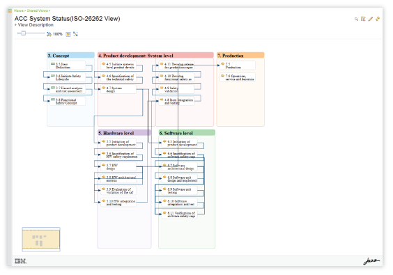
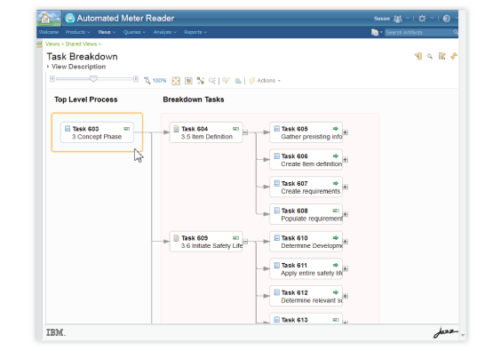

Interaction / Usability / UI
Overview
View editing tool is for users to create, define and customize artifacts relationship views generated by queries. My task was to improve the usability of the view editing tool by incorporating better work flow, guidance and visual affordances.
Before
After
